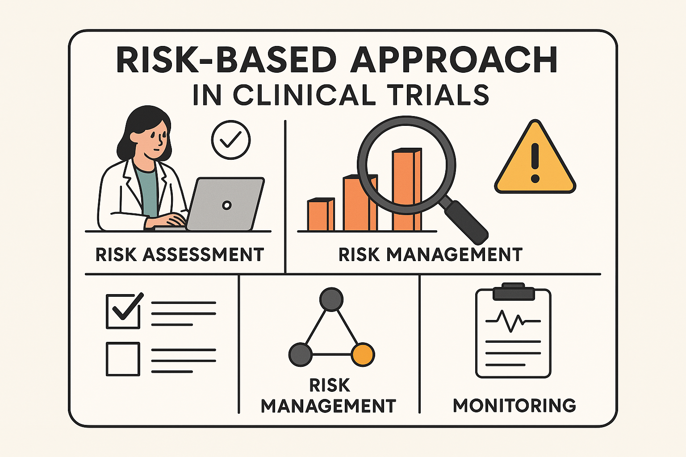
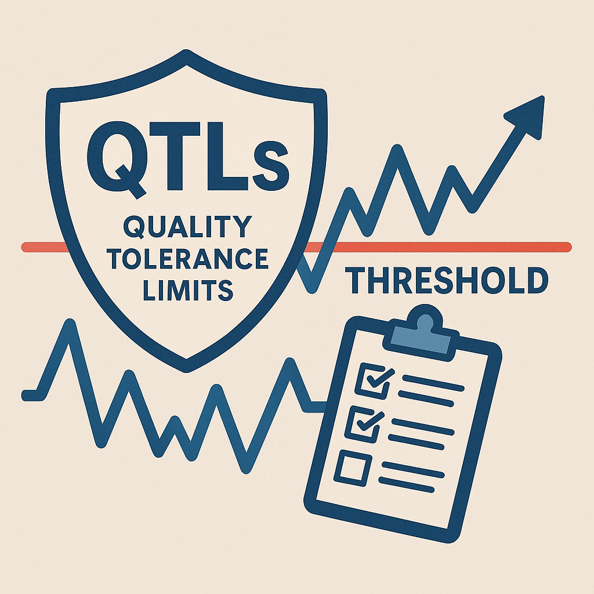
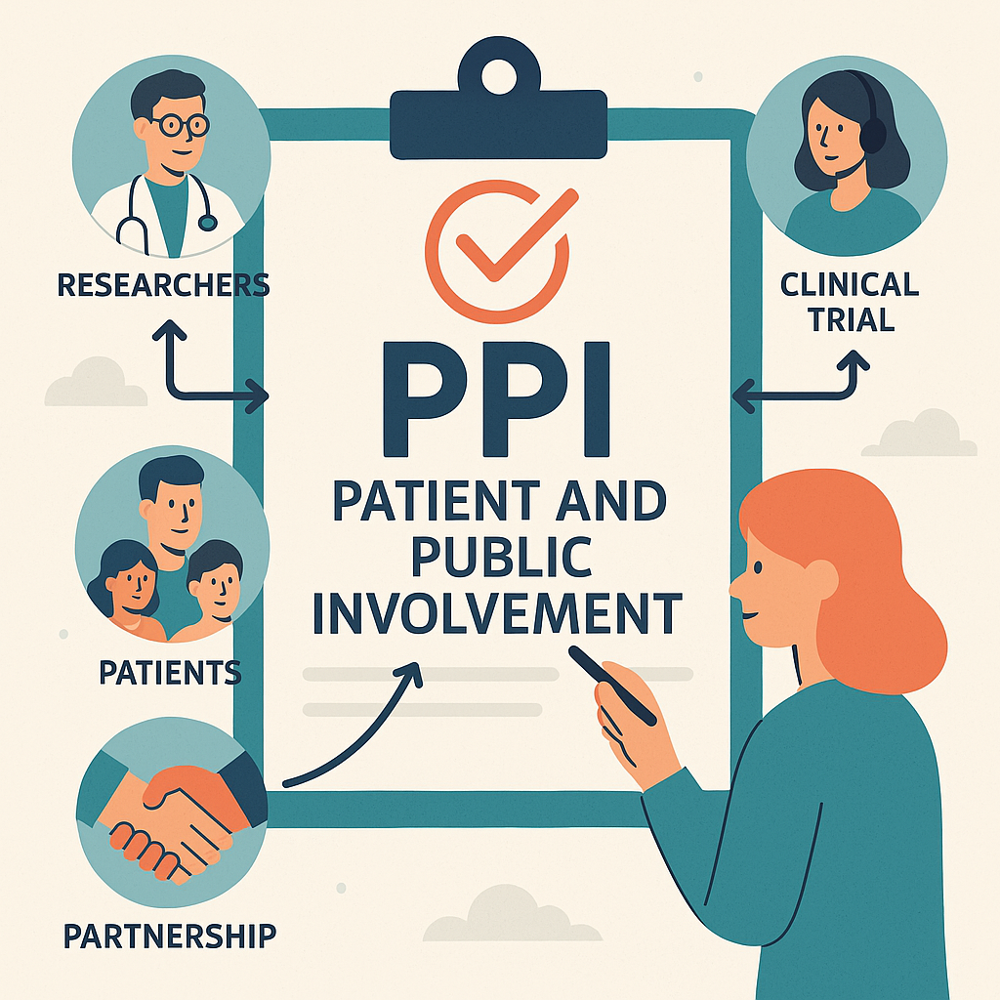

未来の臨床試験品質をデザインする
QMS・QbD・RBA・QTLs・PPI 活用術
 なぜ今、臨床試験の「質」への取り組みが重要なのか？
なぜ今、臨床試験の「質」への取り組みが重要なのか？
皆さん、日々の臨床試験業務お疲れ様です。近年、私たちの開発環境は、試験デザインの複雑化、DCTなどの新しい手法の導入、そしてICH E6(R3)に見られるような規制当局からの品質に対する期待の高まりなど、大きな変化に直面しています。
従来の画一的なアプローチだけでは、これらの変化に対応し、真に質の高い、効率的な臨床試験を実施することが難しくなってきています。患者さんの安全性を確保し、信頼性の高いデータを取得し、最終的に価値ある医薬品を一日でも早く届けるためには、計画段階から品質を戦略的にデザインし、リスクを賢く管理することが不可欠です。
これらの概念を理解し、連携させて活用することで、皆さんの日々の業務における課題解決や、より質の高い臨床試験の実現に繋がるはずです。「自分たちの業務にどう活かせるか？」という視点で、ぜひ一緒に考えていきましょう。
 全体像：各アプローチの連携プレー
全体像：各アプローチの連携プレー
まず、これらのアプローチがどのように連携して機能するのか、全体像を掴みましょう。これらは個別のツールではなく、一つの目的に向かうチームのようなものです。
- QMS (品質マネジメントシステム) - 土台となるルールブック
試験全体の品質を管理するための組織的な枠組み。私たちの活動すべてを支える基盤です。 - QbD (クオリティ・バイ・デザイン) - 成功への設計図
計画段階で「何が重要か(CTQ要因)」を見極め、品質を作り込む設計思想。 - ステークホルダーエンゲージメント (PPIを含む) - みんなの知恵を結集
患者さんや現場の意見を取り入れ、より現実的で質の高い計画やリスク管理を実現。 - RBA (リスク・ベースド・アプローチ) - 賢いリソース配分
QbDで見えた重要点に対するリスクを評価し、重要な箇所に注力する戦略。 - QTLs (品質許容限界) - 品質のアラートシステム
RBAで特定した重要リスクの許容範囲を示す具体的な指標。逸脱は品質問題の早期発見のサイン。
つまり、QMSという土台の上で、QbDとステークホルダーの声で「勝てる設計図」を作り、RBAとQTLsで「賢く守り、異常を検知する」という連携プレーで、臨床試験の品質を高めていくのです。
 リスク・ベースド・アプローチ (RBA) - どこに注力すべきか？
リスク・ベースド・アプローチ (RBA) - どこに注力すべきか？

「全てを完璧に」は理想ですが、現実的ではありません。RBAは、限られたリソース（時間、人、予算）を、本当に重要なリスクに集中させるための考え方です。
なぜ RBA が皆さんの業務に役立つのか？
- 業務の効率化: 全てのリスクに同じ労力をかけるのではなく、影響の大きいリスクに焦点を当てることで、モニタリングやデータチェックの負担を軽減できます。
- 品質向上への集中: 患者さんの安全性やデータの信頼性に直結するリスクへの対策を強化することで、試験全体の質を高めます。
- 「考えさせるGCP」の実践: チェックリスト的な作業から脱却し、「この試験で本当に重要なことは何か？」を常に考える文化を醸成します。
RBAの基本的な考え方と目的
- 臨床試験に関連するリスクを特定、評価、管理し、最も重要なリスクに優先的に対処します。
- すべてのリスクに均等にリソースを割くのではなく、参加者の安全性や試験結果の信頼性に影響を与える可能性の高いリスクに焦点を当て、効率的かつ効果的な品質管理を目指します。
- 「治験における品質マネジメントに関する基本的考え方について」（厚生労働省通知）でもRBAを利用した品質マネジメントの実施が明記されており、規制当局の期待としても重要です。
- リスクに基づいてモニタリング計画を立てることが求められます。
皆さんの業務での活用イメージ：
次の試験計画時、チームで「この試験で失敗するとしたら、最も致命的な要因は何か？（CTQ要因）」を議論し、それに関連するリスク（例：評価の一貫性、被験薬の適切な投与、重要な安全性情報の収集漏れなど）を洗い出します。そして、そのリスクの発生可能性と影響度を評価し、「特に重点的に管理・監視すべきリスク」を特定します。その上で、モニタリング計画（頻度、方法）やデータマネジメント計画を具体化していきます。
臨床試験実施段階でのRBA適用
- モニタリング： リスク評価に基づき、範囲、頻度、方法（オンサイト、オフサイト、セントラルモニタリング）を決定するリスクベースのモニタリング (RBM)が重要です。
- データマネジメント： データの重要度やリスクに応じて、データ収集方法、システム設計、データクリーニング等を設定し、データインテグリティを確保します。
- 監査： リスクの高い組織やプロトコルを優先的に監査対象とすることで、限られたリソースで効果的な品質保証活動を行います。
RBA導入の課題と今後の展望
- RBAの実装には、関係者の理解深化や組織内での議論・合意形成が必要です。
- 「チェックリストとしてのGCP」のマインドセットから脱却し、「本当に重要なことは何か？」を考える文化の醸成が不可欠です。
- ICH E6(R3)の施行に伴い、RBAは標準的なアプローチとして普及が進むと考えられます。
 品質許容限界 (QTLs) - 品質低下の早期警告システム
品質許容限界 (QTLs) - 品質低下の早期警告システム

QTLsは、RBAで特定した特に重要なリスクが、「どの程度までなら許容できるか」を具体的に数値で示したものです。車の速度計のレッドゾーンのように、品質に関する重要な指標が危険水域に入っていないかを監視する仕組みです。
なぜ QTLs が皆さんの業務に役立つのか？
- 問題の早期発見: 試験全体に影響を及ぼす可能性のある体系的な問題を、手遅れになる前に検知できます。
- 客観的な判断基準: 「何をもって問題とするか」の基準が明確になり、感覚的な判断ではなく、データに基づいたアクションを促します。
- プロアクティブな対応: 閾値超過時の対応計画を事前に準備しておくことで、問題発生時に迅速かつ適切な対応が可能になります。
QTLsの基本的な定義と目的
- 「事前に定める品質の許容可能な限界値」（閾値）と定義されます。一般的には、QTLのパラメータ（監視対象の変数）と閾値を合わせて「QTLs」と表現されます。
- 目的は、逸脱が発生した場合に、参加者の安全性や試験結果の信頼性に影響を及ぼす可能性のある体系的な問題を特定し、低減措置の必要性を検討するプロセスを確立することです。
KRI（Key Risk Indicator）との違い
QTLのパラメータとKRIは混同されやすいですが、QTLsはより重大な、試験全体レベルのリスクを対象とします。KRIはより広範な（施設レベルなど）潜在的問題の兆候を捉える指標です。
- QTLs: 試験全体への影響が大きいリスク / 閾値超過は「体系的問題」の可能性 / 事例は少数精鋭 / 総括報告書への記載要
- KRI: 潜在的な問題の兆候 / 閾値超過は「調査・行動」のきっかけ / 事例は多め / 総括報告書への記載不要
QTLsの具体例
具体例1 (PFS試験):
主要評価項目がPFSの試験で、CTQ要因が「腫瘍評価データが適切に収集されること」の場合。
- QTLパラメータ: 腫瘍評価が予定通り実施されなかった（欠測または評価不能）被験者の割合。
- QTL閾値: 例えば「5%」。過去の類似試験データや臨床的重要性を考慮して設定。
- アクション: 閾値を超えた場合、原因調査（例：特定施設の問題か、プロトコル規定の曖昧さか）、トレーニングの再実施、プロトコル改訂などを検討。
具体例2 (同意撤回率):
被験者の権利保護がCTQ要因であり、同意撤回率の高さが問題となる可能性がある場合。
- QTLパラメータ: 同意撤回した被験者の割合。
- QTL閾値: 例えば「10%」。疾患領域や試験の負担度を考慮して設定。
- アクション: 閾値を超えた場合、同意説明プロセスや被験者負担に関する問題がないか調査。必要に応じてICFの改訂やCRCによるフォローアップ強化などを検討。
QTLs導入の課題と今後の展望
- 導入の課題は設定目的・方法の理解不足などがあります。関係者の理解促進、職種横断的協働、事例共有が重要です。
- ICH E6(R3)の浸透とともに、標準的な品質管理指標としての活用拡大が期待されます。各組織でのノウハウ蓄積が必要です。
 ステークホルダー・エンゲージメント - 患者さん・現場と共に創る
ステークホルダー・エンゲージメント - 患者さん・現場と共に創る

臨床試験は、私たち開発担当者だけで成り立つものではありません。患者さん、ご家族、医療従事者、研究者…多くのステークホルダー（利害関係者）との協力が不可欠です。特に、PPI (患者・市民参画) は、患者さんの視点を計画段階から取り入れる重要な活動です。
なぜ ステークホルダーエンゲージメント が皆さんの業務に役立つのか？
- より良い試験デザイン: 患者さんや現場の視点を取り入れることで、現実的で負担が少なく、意義のある試験計画（評価項目、来院スケジュール等）を立案できます。
- スムーズな試験実施: 現場の運用上の課題や患者さんのニーズを早期に把握・反映することで、実施可能性が高まり、トラブルを未然に防げます。
- 参加者満足度の向上: 患者さんの声が反映された試験は、参加への意欲を高め、同意撤回の減少にも繋がる可能性があります。
- リスク特定精度の向上: 多様な視点からの意見は、私たちが気づかなかった潜在的なリスクを特定する上で非常に有効です。
ステークホルダー・エンゲージメントの目的と意義
- 試験の質の向上： 早期からの視点・ニーズ取り込みにより、デザイン、実施、データ収集、解析等の質を向上。特に患者視点はRQや評価項目の意義判断に不可欠。
- 患者保護の強化： 患者意見の反映により、権利、安全性、福祉を保護（例：ICプロセス、負担軽減）。
- 試験結果の信頼性と解釈可能性の向上： 対話を通じた弱点特定とリスクへの優先的取り組みにより、データ信頼性や意思決定の妥当性を向上。
- 試験実施の効率化と実現可能性の向上： 運用上の検討により、実施可能性を高め、複雑さを避け、施設・参加者の負担を軽減。
- 協力と信頼関係の構築： 早期かつ頻繁なコラボレーションで相互理解を深め、協力体制を構築。
- アンメット・メディカル・ニーズへの対応： 患者・医療従事者のニーズ理解と反映により、治療法開発を促進。
- 社会的意義の明確化： 対話を通じ、研究の社会的意義や臨床適用可能性を検討。
皆さんの業務での活用イメージ：
プロトコルを作成する初期段階で、関連する疾患の患者会 (PAG) や経験豊富なCRCに、計画案について意見交換会を実施する。例えば、「この評価項目のための検査は、実際の患者さんにとってどれくらいの負担感か？」「同意説明文書のこの表現は分かりやすいか？」「来院以外のデータ収集方法（例：アプリ入力）は現実的か？」といった点を問いかけ、フィードバックを計画に反映させる。
ステークホルダー・エンゲージメントの方法とタイミング
- 早期からの関与： 計画初期、特にデザイン設計プロセスからの参画が重要。
- 開かれた対話とコミュニケーション： チェックリストに頼らず、率直な意見交換や批判的意見の受容。QbDコミュニケーションシート等の活用も有効。
- 定期的なコミュニケーション： 試験プロセス全体を通じた継続的な対話。
- 患者・市民参画（PPI）の推進： 立案段階から患者意見を求め、患者が望む試験を実現。
- リスクコミュニケーション： リスクに関する対話で影響度・重要性を明確化。
- フィードバック： ステークホルダーの期待を理解し、エンゲージメントから学んだことや貢献度をフィードバック。
ステークホルダー・エンゲージメントの課題と克服
- 研究者と患者間の期待ギャップや、適格基準が患者ニーズを考慮しない等の課題が存在し得ます。
- 克服には、早期からの対話による相互理解と、患者視点の積極的な取り入れが必要です。
 まとめ：明日からのアクションのために
まとめ：明日からのアクションのために
本日ご紹介したQMS、QbD、RBA、QTLs、ステークホルダーエンゲージメントは、未来の臨床試験品質をデザインするための強力な連携ツールです。
- RBAで、業務の「選択と集中」を進め、効率と質を両立させる。
- QTLsで、品質低下のサインを早期に捉え、プロアクティブに対応する。
- ステークホルダーエンゲージメントで、多様な視点を取り込み、より現実的で意義のある試験を計画・実行する。
これらのアプローチを理解し、皆さんの担当する臨床試験の特性に合わせて、一つでも取り入れてみることが、品質向上への大きな一歩となります。
次のステップ：私たちにできること
- 担当中の試験で「品質上最も重要な要因(CTQ要因)」は何か、チームで議論してみる。
- 特定したCTQ要因に対するリスクを洗い出し、現在の管理策が十分か評価してみる。
- 計画中の試験があれば、患者さんやCRCの意見を聞く機会を設けることを検討する。
- QTLsの考え方を参考に、現在のモニタリング指標を見直してみる。
今日の内容について、さらに詳しい情報やディスカッションが必要であれば、いつでも声をかけてください。